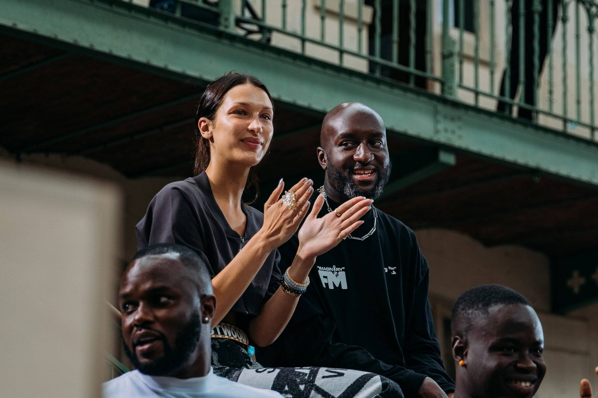
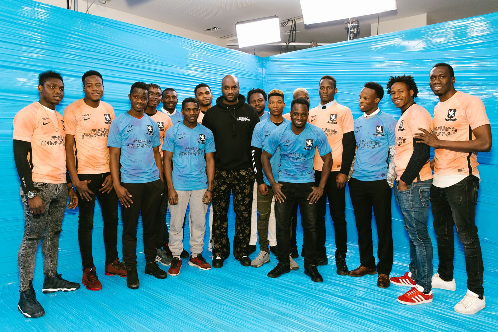
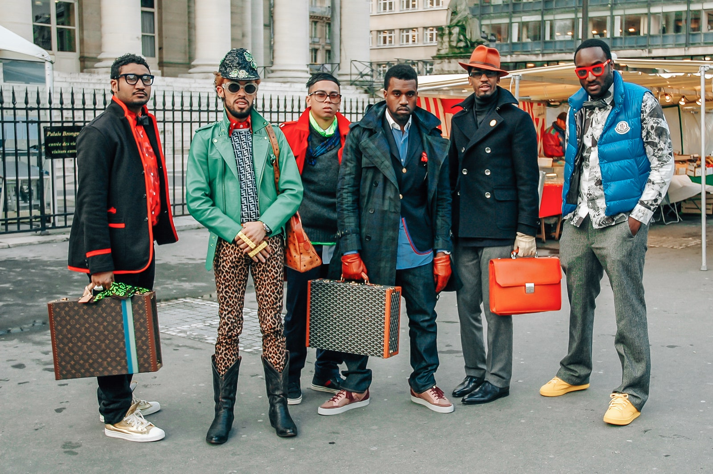
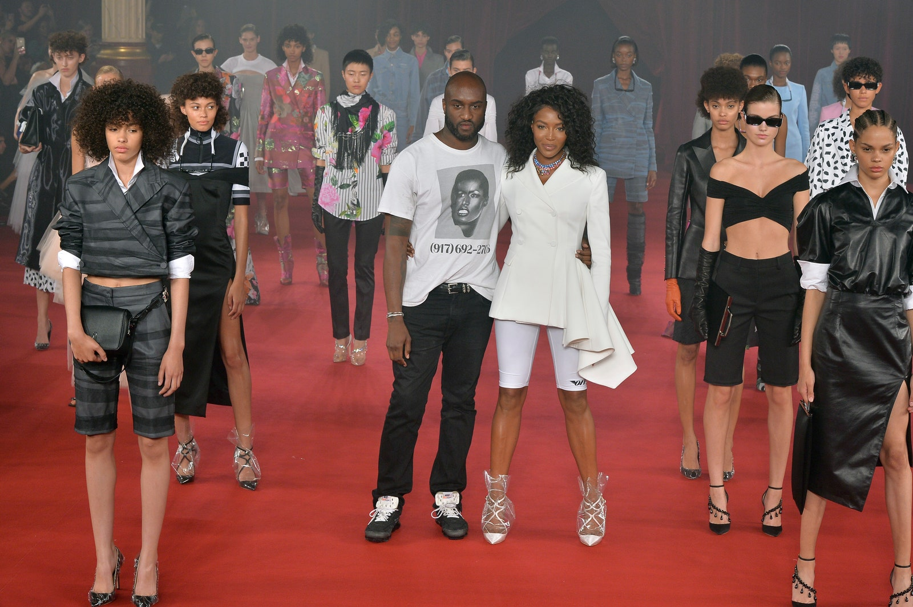
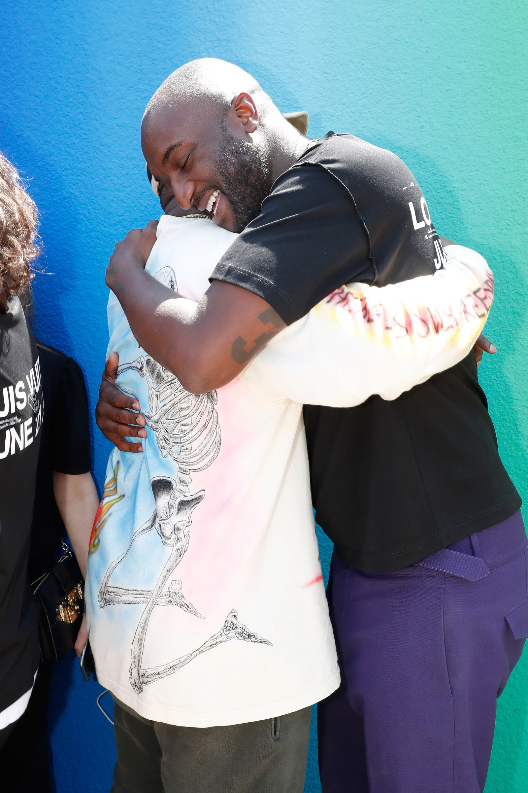

:(
28 de noviembre de 2021 | Por Emanuel Navarro

El mayor producto de Abloh fue la creación variada de oportunidades para otros a quienes de otra manera se les niega la oportunidad de manera rutinaria. En 2017, por ejemplo, creó un uniforme para Melting Passes, un equipo de futbolistas recién inmigrantes en París cuya falta de residencia les impidió jugar en una competición oficial, y luego los incluyó en la audiencia en un espectáculo de Off-White. . Había 3.000 estudiantes en su primer espectáculo de Louis Vuitton en las Tullerías en 2018. Trabajó para apoyar a los patinadores y surfistas en Ghana, el país de nacimiento de sus padres, y proporcionó fondos para arreglar el parque y las instalaciones de juego en Chicago, la ciudad a la que llamó hogar.
En agosto de 2020, lanzó su Fondo de becas postmodernas como una respuesta progresiva a Black Lives Matter, y desde entonces ha trabajado para recaudar fondos y apoyo para empresas propiedad de negros. También fue generoso en la esfera profesional, asesorando a diseñadores negros más jóvenes, incluido el británico Samuel Ross, y empleando a otros dentro del equipo de diseño de Off-White, uno de los cuales escribió durante la redacción de este artículo: “Le debo mucho a Virgil. "
La generosidad de Abloh fue alimentada por la esperanza. En esa misma entrevista hace seis meses habló de su entusiasmo ante la idea de que la tecnología podría crear las condiciones en las que “la humanidad puede ser una especie de utopía”.
Añadió: “Y es por eso que me concentro en el diseño, mientras que también me estoy enfocando en preguntar qué y a quién puedo arrojar luz. Sabes que no se trata solo de hacer arte o moda por sí mismo: hay niños en Accra que pueden apegarse y participar en la comunidad del skate si alguien construye un puente. Y hay niños en el lado sur de Chicago que necesitan educación y salud: ¿cómo se relaciona lo que estoy haciendo con eso? ¿Cuál es el puente para eso? Esa es una especie de ética de mi carrera. Sabes, inicié el Fondo de Becas Postmodernas y recaudé un millón de dólares para ofrecer asistencia en la educación de estudiantes negros. Esas cosas son fundamentales para mí ". Más recientemente, en julio, ese imperativo crítico en el pensamiento de Abloh recibió el respaldo de LVMH, que anunció que asesoraría al conglomerado a nivel ejecutivo, actuando para crear una disrupción positiva en todo el grupo.
Virgil Abloh nació en 1980 en Rockford, Illinois, de Nee y Eunice Abloh, quienes habían emigrado a los Estados Unidos desde Ghana. Cuando no estaba en la escuela, Abloh desarrolló una pasión temprana por el skate, a la que atribuyó haber despertado su primer interés en la moda, y luego por ser DJ, que se convertiría en otra faceta clave en el trabajo de su vida. Mientras estudiaba Ingeniería Civil en la Universidad de Wisconsin y más tarde en el Instituto de Tecnología de Illinois, se encontró con Kanye West, otro pensador poco ortodoxo, que quedó tan impresionado que instaló a Abloh como su 'director creativo' en 2002.
Durante los siguientes años, las muchas actividades de Abloh incluyeron el lanzamiento de una galería comercial, el trabajo en el colectivo Been Trill junto a Heron Preston y Matthew Williams, y el lanzamiento de Pyrex Vision, una marca ahora desaparecida que todavía se piratea hasta el día de hoy. En 2009 hizo su lanzamiento más significativo personalmente de todos: una exitosa propuesta de matrimonio con su entonces novia de una década, Shannon Sundberg.
Ese fue también el año en que, ahora famoso, Abloh se unió a West y sus asociados Don C, Taz Arnold, Chris Julian y Fonzworth Bentley para asistir a los desfiles de moda de París: West estimó más tarde que lograron acceder a poco más de la mitad de ellos. En el mismo año, Abloh se unió a West para una pasantía de un mes en la sede de Fendi en Roma, y al año siguiente se unió al proyecto Donda de West. En 2013, el diseñador decidió cambiar de Pyrex Vision para centrarse en un concepto nuevo que había llamado Off-White. Compartió esta idea con Marcelo Burlon del condado de Milán, un compañero de espíritu, diseñador y DJ, que alentó a Abloh a fabricar Off-White a través de lo que más tarde se convertiría en el grupo New Guards en Milán.
Ese espectáculo de la tarde soleada del 21 de junio de 2018 se llevó a cabo en una pasarela de arcoíris y claramente se sintió como un momento decisivo en la moda, lo cual fue. Después de que él hizo su reverencia, Abloh y West intercambiaron un abrazo de éxtasis. Como informó Vogue Runway: “El último look fue un poncho plateado metálico con“ Follow the Yellow Brick ”escrito en un parche en el pecho. Cuando publicó una foto de ese momento en su Instagram, la leyenda decía: "Tú también puedes hacerlo".
Virgil Abloh nació el 30 de septiembre de 1980 y murió el 28 de noviembre de 2021. Le sobreviven su esposa Shannon y sus hijos Lowe, de 8 años, y Gray, de 5, así como sus padres Nee y Eunice y su hermana Edwina.
2do video
Intro
| 15 de agosto de 2021 |
Concepto : Es la intro actual de el canal de Ema "Cultura General" que estará bigente solo por un año. Hay unos tambores de fondo a los cuales los acompañan una guitarra electrica y ya de último se puede escuchar la voz de Aarón (El mejor amigo de Ema) y lo que dice Aarón en la intro es "QUE TE VALGA VERGA MAJE" lo cual motivo a Ema a crear un canal en YouTube y hacer su primer video.
Porque lo motivo : "Porque lo que Aarón dijo fue basicamente como "QUE NO TE IMPORTE LO QUE DIGAN LOS DEMÁS" o "SIMPLEMTE SOLO HAZLO Y ATREVETE" y me pegaron bien profundo esas palabras porque una de las cosas de las cuales la gente se arrepienten en su vida es no averlo intentado, se quedan con el "¿QUE HUBIERA PASADO SI LO INTENTAVA?, ¿ESTARÍA EN EL LUGAR QUE ESTOY AHORA MISMO?, ¿SERÍA FELIZ SI LO HUBIERA INTENTADO?" no quiero arrepentirme de nada, el día de mi muerte sabré porque viví" Dijo Ema al preguntarle por que lo inspirarón esas palabra tan sabias de Aarón.
Ver más3er video
Juego Salvar a mi hermana
| 15 de agosto de 2021 |
Concepto : Es un tutorial acerca de uno de los juegos más famosos y divertidos de juegos diarios el cual es "salvar a mi hermana".
En el video Ema da una clase de tutorial acerca de los comendos del juego y de como salvar a tu hermana, claro si es que te atreves a jugarlo.
Ver más